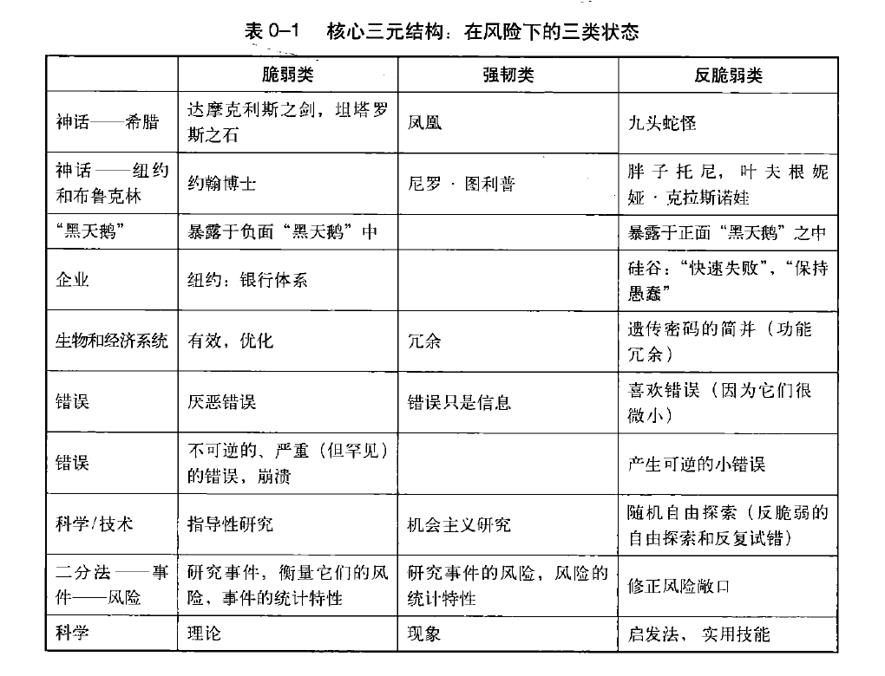
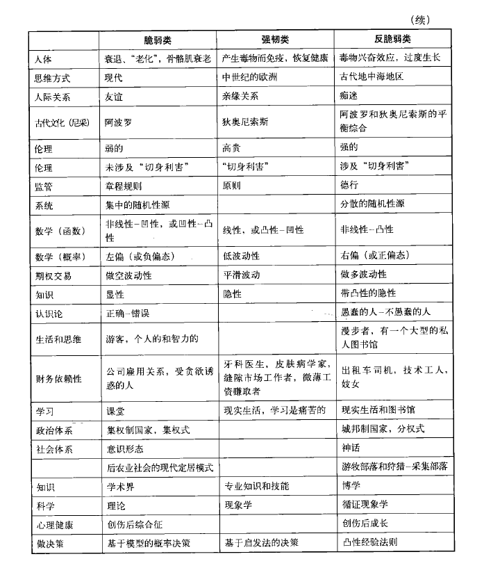
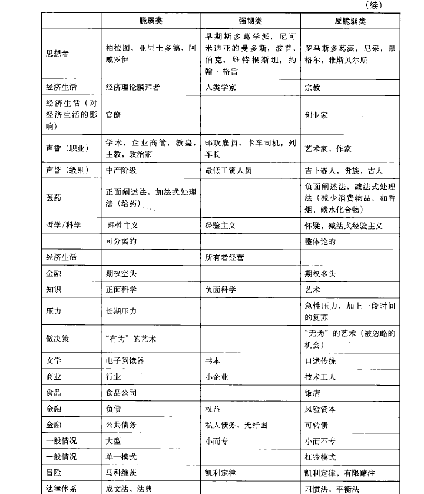
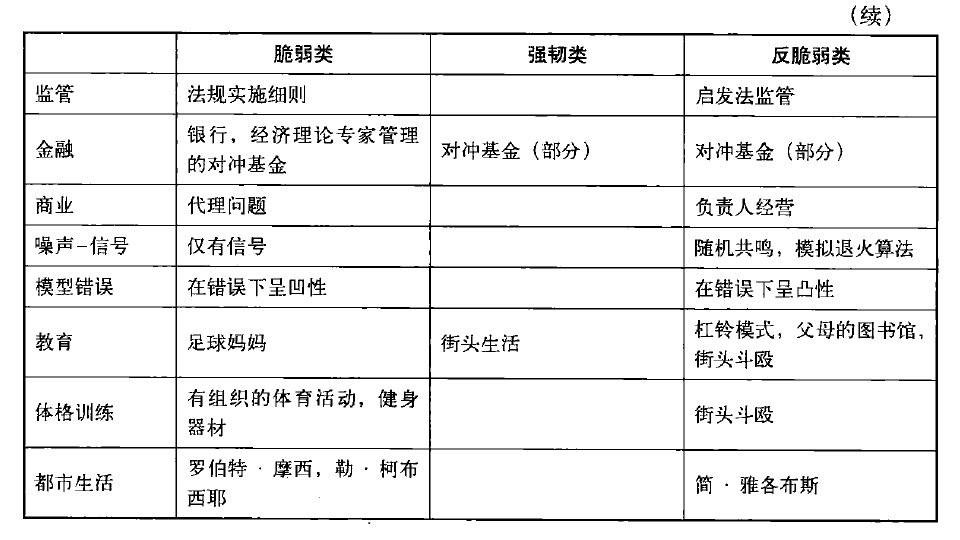
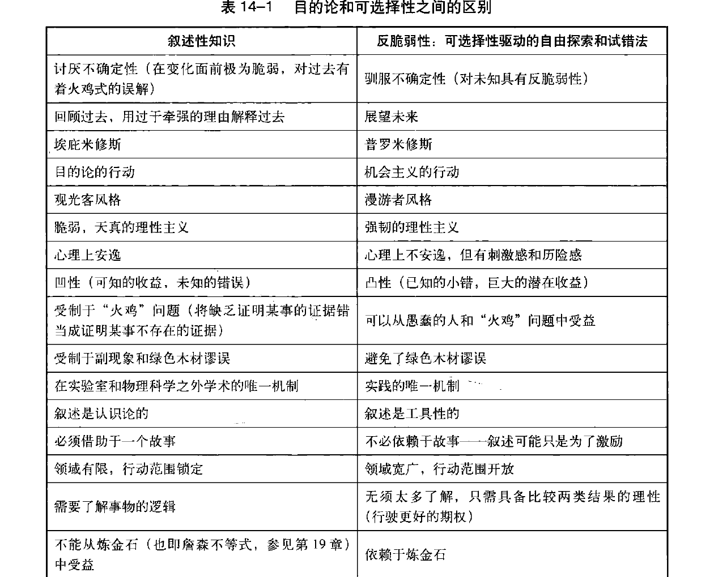

Antifragile - Things That Gain from Disorder#
Nassim Taleb 是一名黎巴嫩裔美国人，著名的作家、统计数学家和基金经理，其思想理论体系具有极其强大的“反脆弱性”（这听起来有一点像递归定义，他提出的“反脆弱性”这一理论本身也具有反脆弱性）和可实践性。在我个人看来，会将本书放在他一系列著作的最首要位置，其次是 The Black Swan。
作为一名成功的基金经理，他的反脆弱理论自然被广大投资者应用在市场中，但这种理论最大的意义在于可以推广到宇宙中的一切还在运动的事物中，普适性极强。
由于这本书被交易员奉为圭臬，因此我选取了一篇简要整理其核心思想的文章，该文章罗列了 100+ 短句，这也省去了我自己再去重复整理的时间，详见以下内容。
读书笔记：《反脆弱》-塔勒布
一个人的量化之旅
2025年01月21日 08:13 上海
风会熄灭蜡烛，也能使火越烧越旺。随机性、不确定性和混沌也是一样，因此你要利用它们，而不是躲避它们。
从随机事件（或一定冲击）中获得的有利结果大于不利结果的事物就是反脆弱的，反之则是脆弱的。
没有清晰的理解，就写不出清晰的文章。
如果你看到欺诈而不揭露，那么你就是同谋。
对傲慢者友好无异于对友好者傲慢，对任何邪恶行为宽容无异于纵容这种行为。
强韧性或复原力在波动性和无序性面前既不会受损也不会受益，而反脆弱性则会从中受益。
脆弱的事物喜欢安宁的环境，而反脆弱的事物则从混乱中成长，强韧的事物并不太在意环境。
如果你希望拥有反脆弱的特质，那么就将自己置于“喜欢错误”的情况下：乐于犯众多的小错，承受小的伤害。
财政赤字已被证明是社会和经济系统脆弱性的主要来源。
对挫折的过度反应所释放出来的多余能量成就了创新。
如果你急着要完成某事，不妨将其交给办公室里任务最繁忙的（或第二繁忙的）那个人去做。大多数人的空闲时间都会被浪费掉，因为空闲时间会让他们无所事事、慵懒、无心向学，而一旦忙起来，他们往往会在其他任务上也更为积极。
层层冗余是自然生态系统集中管理风险的显著特征。
只有傻瓜才会认为世界上最高的山峰就是他亲眼所见的最高的那座。
信息是具有反脆弱的，湮灭信息的努力比宣传信息的努力更能增强信息的力量。
召开新闻发布会来“安抚”投资者，反而会吓跑投资者，并引发死亡螺旋或银行挤兑。
给我们带来最大利益的并不是那些曾试图帮助我们的人，而是那些曾努力伤害我们但最终未能如愿的人。
压力就是知识。
压力源即信息。
杀死我的东西却让其他人更强大；杀不死我的东西能杀死其他人。
大自然更喜欢在信息层面，也就是通过遗传密码让游戏继续下去。因此，有机体需要死亡，以确保大自然的反脆弱性。
“黑天鹅”管理细则：自然喜欢有机体之间存在的多样性，而不是一个不朽的有机体内部存在的多样性，除非你将自然本身视为一个不朽的有机体。
如果每次试错都能让你了解到什么是行不通的，渐渐地，你就接近有效的解决方案了——这样，每一次努力都变得更有价值，更像是一笔支出而非一个错误。当然，在此过程中你将不断地有所发现。
彼此负相关的错误，一个错误的发生会降低未来出现事故的概率。
如果说每一次飞机失事都降低了下一次事故的发生概率，那么每一家银行的崩溃却会提高下一家银行崩溃的概率。
我对失败者的特征描述就是，失败者往往在犯错后不内省、不探究，觉得难堪，听不得批评，试图解释自己的错误而不是用新的信息丰富自己，并开始新的历程。
英雄主义以及它所赢得的尊重是社会对于那些为了他人而承担风险的人所作出的一种补偿。
对自雇人士来说，一个小的，非致命的错误可以传递宝贵的信息，引导其采用更合适的方法。
没有波动，就没有稳定。
我的主要提议是形成一套系统性准则，以决定何时进行干预，何时让系统自行运作。
很少有人知道，拖延是我们的自然防御本能，是让事情顺其自然地发展并发挥其反脆弱性的本能。
我可以推迟一个小病的就医时间，或者推迟一篇文章的写作时间，直到我的身体告诉我，我已经准备好了。
由于拖延源于我们的自然意志，其传递了我们自身动力不足的信息，因此解决方案就是换个环境或者换份工作，让自己不要那么纠结或者压抑。
他要么不生气，一旦生气可谓雷霆震怒。
我跑到讲台上，告诉观众，下一次再有哪个西装革履的人在他们面前预测未来某日将发生的事情，他们应该先让他展示一下他过去的预测业绩。
让事情不会因我们的错误而搞砸，甚至反而能从我们的错误中受益。
没有看到海啸或经济事件还是情有可原的，但是如果我们建造的事物无法抵御这些灾难，则是不可原谅的。
好奇心是具有反脆弱的，就像上瘾症一样，你越是满足它，这种感觉就越强烈。
建立在自以为理解了事件发生概率的错觉之上的系统注定要崩溃。
与我而言，博学更重要，等到年老时，博学就会成为智慧。
这个不相信预测的人，却从预测中发了大财。
他识别脆弱性，在脆弱事物的崩溃上下注。
一无所失。
成功带来了非对称性：你现在失去的远远多于你得到的。
淡化你所拥有的东西在你心中的地位，这样任何损失都不会给你带来伤痛。
斯多葛主义的主旨就是驯化情绪，而不一定是消除情绪。它不是要把人类变成植物，而是将他们对情绪的关注转移到对产生情绪的核心根源的关注上，同时使他们保持对情感的掌控力。在我看来，现代的斯多葛主义践行者就是能够将恐惧转化为谨慎，将痛苦转化为信息，将错误转化为启示，将欲望转变为事业的人。
收益的簿记很简单，先将它们全部计为支出，如果有人归还了，则确认为利得；如果无人归还，那么我也不认为这是损失，就当是我送给他了。这是道德式记账，不过也算是记账。
脆弱性意味着失去的比得到的更多，意味不利因素比有利因素更多，即等于不利的非对称性。
反脆弱性意味着得到的比失去的更多，意味有利因素比不利因素更多，即等于有利的非对称性。
迈向反脆弱性的第一步就是减少不利因素，而不是增加有利因素；也就是说，通过降低自己暴露于负面“黑天鹅”事件的概率，让反脆弱性顺其自然地发挥作用。
降低脆弱性不是可有可无的选择，而是一种强制性要求。
要赚钱，最好先考虑生存问题。
如果一个赌徒最终面临爆仓的风险，那么其策略的“潜在回报”就是无关紧要的。
如果某个事物是具有反脆弱的，那么它破碎的风险会导致你做的任何旨在改善它或提高它的“效率”的工作都变得无关紧要，除非你先降低它破碎的风险。
具有脆弱性的经济增长不能被称为经济增长。
针对不确定性的所有解决方案，都是以杠铃的形式呈现的。
一面是极端的风险厌恶，一面是极端的风险偏好。
反脆弱性是积极主动和保守偏执的组合——消除不利因素，保护自己免受极端伤害，同时让有利因素或正面的“黑天鹅”事件顺其自然地发挥效用。
职业也可以分阶段的：先做非常安全的工作，随后从事投机性较强的工作。如果投机失败，或无法实现预期的满意度，可以回归老本行。
任何消除毁灭性风险的策略都属于杠铃策略
确保发生不可接受情况的概率为零。
选择权让你具有反脆弱性，它帮助你从不确定性的积极面中受益，同时也使你不因其消极面而经受严重的伤害。
起而行，而非坐而言。
期权就是反脆弱性的一种代表。
如果决策正确所得到的利益大于决策错误所受到的伤害，那么从长远来看，你就将从波动性中受益。
可选择性带来的优势就是当你正确时，你会获得更大的收益，这使你不必每次都正确。
在疯狂之余保持理性，在看到有利机遇时及时抓住。
选择权 = 非对称性 + 理性。
理性就是你知道要保留好的，抛弃坏的，直到如何获取利润。
选择权就是反脆弱性的武器。
试错法有一种人们还未理解的首要价值：它启示不是随机的！由于可选择性的存在，他需要一定的理性：它需要你以一定的智慧来识别有利的结果，以及知道该放弃什么。
在一个你确切地知道自己要找寻什么的环境中，每次尝试都会使你更接近那个东西。我们从失败的尝试中能够逐渐摸索出正确的方向。
贫困带给人经验。
如果人们都对战争推高油价的情况做好了准备，那么油价必定会据此做出反向调整。
人的一生中只有少数几次你绝对不能错过的机会。
大脑中装满太多复杂的技巧和方法，往往会使人忽略基本的东西。
某种东西和某种东西的函数之间的非对称性越大，两者之间的差异就越大。最后，它们之间可能会毫无关系。
有时，即使经济理论很有意义，其应用也不能用某种模型，采用自上而下的方式来推行，所以我们需要有机的自我驱动式试错法来让我们实现对经济理论的应用。
我们必须借助机会主义和可选择性来闯荡未来。
可选择性是驯化不确定性，并在不了解未来的情况下理性行事的方式——唯一方式。
我们将选择权视为反脆弱性的表达。
当你显得脆弱的时候，你需要知道的信息比你在具备反脆弱性时需要知道的更多。相反的，当你以为你知道的信息比你实际知道的要多时，你在错误面前就是脆弱的。
交易员的交易–>交易员发现技术和产品–>学术界的经济学家发现公式，并声称交易员 在使用它们–>新的交易员相信了学者的话–>事情搞砸了（因为理论引起的脆弱性）。
规划使公司无视选择权，因为它的行动方针已经过于僵化以至于无法把握稍纵即逝的机遇了。
在反脆弱性的情况下，比如试错法中，样本记录往往会低估长期平均值，隐藏起自身的优点，而不是掩盖自身的缺陷。
在负面对称的脆弱情况下，样本记录往往会高估长期的平均值，它会隐藏其缺陷，而展示其优点。
我们不是为了生活而学习，只是为了学习而学习。
人们了解的很多东西其实都不值得去了解。
在学校被灌输的东西，我已经忘光了；而自己决定读的东西，我仍然记得很牢。追随自己的爱好来选择阅读的重要意义，莫过于此。
问题的答案永远根植于问题之中。
有些事情我不理解未必表示我无知。
风险比知识更重要。
生活中削足适履的典范莫过于简化非线性事物，使之呈现出线性——这种简化扭曲了事实。
对于脆弱性的事物来说，冲击带来的伤害会随着冲击强度的提高而以更快的速度加剧（直到达到某一水平）。
脆弱性一般都是非线性的。
对于一个尚未受到损害的事物而言，一块巨石产生的伤害要远大于1000块小石子，即一件罕见的严重事件的影响将远超较小冲击的累积影响。
对于脆弱的物体而言，温和冲击的累积效应低于等量的单一严重冲击所造成的单一影响。对于反脆弱物体来说，在一定限度内，冲击越强，益处越大。
风险的凹性越大，来自意外事件的伤害就越大，而且大得不成比例。因此非常大的偏差会招致一个大得不成比例的影响。
当一个人别无选择，不得不采取一些行动，而且是不计成本地采取行动时，忍痛行为就发生了。瓶颈是所有忍痛效应的源头。
全球化促进了集中化趋势的蔓延，就好像整个世界成了一个只有狭窄出口的巨大房间，所有人都争相涌向同一个出口，于是便产生了大量伤害。
非线性更容易受到极端事件的影响。
我现在可以说的是，经济学与计量经济学课程教授的很多东西，包括公式，都应立即被摈弃，这就解释了为什么经济学在很大程度上是一门骗人的学科。脆弱推手，总是带来脆弱！
如果一个人在变化面前是脆弱的，那么平均数的概念就是没有意义的。
如果你拥有有利的非对称性，或正凸性，从长远来看，你会做得相当不错，在不确定的情况下表现优于平均水平。不确定性越强，可选择性的作用越大，你的表现就越好。
有必要先清除脆弱性。
了解什么是错的能给你带来强韧性，不了解则带来脆弱性和投机性，但不必因此而害怕，你要设法确保自己在错误的情况下也不会受到伤害。
一个哲学家应以一个理念，而非多个理念扬名。
对于自然消亡的事物，生命每增加一天，其预期寿命就会缩短一些。而对于不会自然消亡的事物，生命每增加一天，则可能意味着更长的预期剩余寿命。
一个物体的强韧性与它的当前寿命成正比！
一个事物的未来预期寿命与它过去的寿命成正比。
让孩子们多读经典著作。未来包含在过去之中，没有过去的人就没有未来。
脆弱的东西就是经不起时间考验的东西。
安逸本身就使人脆弱。
只有在用药益处很大时才服用抗生素。卫生或过度的卫生，也有相同的效果，特别是在人们每次接触外界后都用化学物品来清洁双手的情况下。
简单地说，人类不应该玩火自焚（比如去研究原子弹、金融衍生品，或者创造生命的工具）。
一切不稳定或易碎的物品，都很有可能被打碎。
谈论减肥的理论总是比坚持减肥要容易。
肥胖其实是脂肪和碳水化合物共同作用的结果，但许多人却错误地将问题归咎于脂肪，而不是碳水化合物。
好，主要是缺乏坏的缘故。
在很多病情轻微的情况下，任何使你远离卫生、选择无为策略（因此给予大自然发挥作用的机会）的事情都是有益的。
当我们吃素时，我们就需要稳定地摄取食物；当我们吃肉时，我们可以更随机地进食。
当外部资源匮乏时，你的细胞将开始自噬，或者分解蛋白质，重新合成氨基酸，为构建其他细胞提供原料。
对某些人来说，最坏的结果不是死亡，而是死得不光彩，甚至只是平庸地死去。
我们活着就是为了产生信息或改善信息。
我们之所以今天还能生活在这个世界上，就是因为某些人在某个阶段为我们承担了风险。
有的人只能被称为半个人，不是说他没有观点，而是说他不敢为之冒险。
观众们并不喜欢非志愿者的角斗士，因为他们没有将灵魂投入决斗。
除非努力进取，否则尊严将一文不值。
如果你勇于承担风险，有尊严地面对自己的命运，那么你做什么都不会贬低自己所做的事情；如果你不承担风险，那么你做什么都不会使自己伟大。如果你承担风险，那么，那些不承担风险的人带给你的侮辱只不过如同牲畜的吠叫：你不可能因为狗朝着你狂吠而感觉受到了侮辱。
对战争投赞成票的人需至少有一个后代参加战斗。
你不能只是坐在那里抱怨世界。你需要主动迎接挑战，战胜困难。
在反脆弱性的情况下，你可能在很长时间内反复失败，但不会遭到很大的损失，只要碰巧做对一次就可以大赚，而在脆弱性的情况下，一次损失就可能让人一蹶不振。
愚蠢的人总是力图赢得辩论，而聪明人则寻求获利。
风险需要你用行动而不是空谈去解决。
但凡需要大力度营销的产品，不是劣质产品就是邪恶产品。
永远不要相信一个没有自由的人所说的话。
自由是一种精神状态。
自由人不会被强迫做他本不愿意做的事情。
在一个人的情况下，如果感觉做某事很傻，人们就不会去做，但是在一群人的情况下，他们却会参与这样的傻事。
我们可能永远不会了解x，但我们可以考虑x的风险，用杠铃模式来解决问题；即使x仍然大大超出我们的理解，我们也可以控制x的函数，也就是f(x)。我们可以不断地改变f(x)，直到我们用一种机制让我们对其感到放心。这种机制就是凸性转换，是杠铃模式的一个比较时髦的名字。
验证你是否活着的最好方式，就是查验你是否喜欢变化。
然而，查看他人总结的二手信息总不如亲自阅读并总结一手信息，因此下文记录了个人实际的阅读所想。
第一卷 反脆弱性：介绍#
第一卷介绍了反脆弱性，即在不发生系统性危害的情况下，适当进行轻微损害反而会导致有机体更加茁壮进而发生进化。第一次接触这种观念的人可能难以理解，但是生活中绝大多数例子都是最佳证明：
打疫苗激发了免疫反应，没有病为什么要折腾它？自然是为了后续如果真正遇到疾病入侵能够有效地进行抵抗。（在书中有一个词经常被提及，“毒物兴奋效应”，这也使我思考，非常讲究卫生这种行为是否会导致某种程度的“脆弱”？）
学生努力完成日常作业的目的虽然痛苦，但避免了没能通过考试带来的更大痛苦。
吃一堑长一智。
一朝被蛇咬，十年怕井绳。
学习语言的最佳方式就是在保证生命和财产安全的前提下，独自前往异国他乡，这样日常生活带来的压力会促使语言能力的极大进步。
…
大量例证也都指向了一种行为，就是堆砌冗余。
拥有储蓄的群体总是能在经济危机中比负债的群体更好，参考 Warren Buffett。
为交通旅途中的不确定性多预留一些时间，这样遇到突发的意外时也可以尽量避免耽误原先预定的计划。
机会是留给有准备的人。
…
反脆弱性能促使有机体进化，但是这里的有机体指的是一个系统：细胞相对于大分子是系统相对于个体，人体相对于细胞是系统相对于个体，公司相对于个人是系统相对于个体，国家相对于公司是系统相对于个体。系统会在个体的有限牺牲下发生进化，也只有这种残酷的方式（因此无限增殖的癌细胞会破坏人体系统而不是让人体进化）。失败和死亡是必要的，但是作为有精神思想的每个人都不想让自己作为被牺牲的个体，因此正确认识可进化的系统和被牺牲的个体，实际上这是一个立场问题，没有对错之分。
第二卷 现代化与对反脆弱性的否定#
第二卷中强调了不允许发生一点小错的“稳定系统”通常都会导致一次巨大的不稳定使系统瓦解，而频发且系统能否自我修复的小波动才能让一个复杂系统形成动态的稳定，不至于因一次意外就崩溃。
过多的干预在绝大多数情况下都是无益甚至是有害的，但是这里需要明确一个前提条件，这里的“干预”是对复杂的非线性系统，例如自然环境、国家经济和人体等。对于一些非常基础的线性问题，使用科学原理进行“干预”肯定是必要的，正因为非线性系统中的问题是非常复杂的，现代人类还远远没有掌握其规律，因此才需要遵循少干预的原则，“无为而治”在这种情况下是相对最好的方法。
第三卷 非预测性的世界观#
第三卷描述了“预测”和“非预测”，由于一点轻微的扰动就会导致复杂系统出现难以预测的变化，因此想要做到精准的预测是不可能的，最好的方法就是不预测，只是根据系统因随机性而发生的变化去应对。
抱着非预测性的观念去考虑复杂系统，在线性系统中的那些一成不变的原理就不再永恒有效，因此需要一些方法去应对，“杠铃”策略就是其中非常简单有效的方法之一。“杠铃”策略抛弃了平庸的中间部分，只选择最安全的一侧和最冒险的一侧，并且只分配给最冒险的一侧一小部分，并且需要保证这种冒险能获得的潜在受益是无法估量而不是有明确上限的。这样就构建了一个非对称的策略，仅仅使用一小部分的可能亏损去博取几乎无限制的收益。
书中列举了一个我认为非常好的例子，Taleb 也在描述这个例子前做了声明，虽然这个例子中的行为可能违背一些道德观念，但确实是一种典型的“杠铃”策略。一些女性在结婚时会选择嫁给医生和会计师等稳定职业的男性，但是会花费 10% 的时间去与摇滚明星（我想这里可能并不是指那种大众明星，而仅仅指那些“浪子”）偷情。这种策略会使女性有 90% 的相对非常安全的保障，但有最多 10% 的亏损去博取无上限的精神等各方面的收益。当然这里肯定要说明，真正的“杠铃”策略是不能让那 10% 的冒险去影响那 90% 的安全，现实生活中许多女性其实也在采用上述“杠铃”策略，但是她们没有能力驾驭这种策略，让那 10% 的冒险也影响了 90% 的安全。
第四卷 可选择性、技术与反脆弱性的智慧#
选择权具有反脆弱性，在金融市场中，选择权主要指期权（options），在广泛的日常生活中，同样存在大量选择权。选择权具有不对称性，即在一定概率下获得的比失去的更多，且是非线性的多。在有利的不对称性结构下，无需太多智力、知识、技巧等，因为这种结构具有反脆弱性，长期结果总是偏向获利，相反具有脆弱性的结构长期结果总是偏向受损。
选择权 = 不对称性 + 理性
理性就是在结构经历波动后，哪些是好的部分要被保留，哪些是坏的部分要被抛弃，类似于自然界的筛选。
生活就是“长 gamma”，gamma 是期权非线性的名称，因此“长 gamma”表示从波动性和可变性中获益。运气在人一生中的重要性远大于努力，因此将自己的生活调整成为具有反脆弱性的非对称结构，在这种结构下，经历越多的波动反而能够捕获更多的运气使自己获益。
承担风险不是赌博，可选择性也不是买彩票，必须精确计算和评估选择权的成本和代价相对于可获益部分是否足够低廉，即盈亏比是否足够高。此时需要考虑进行分析时是否有将非独立即存在函数关系的事物错认为是独立的，从而导致分析谬误。
正如“人类教育鸟类学会飞行”这样愚蠢的问题，大量创新都来源于选择权，即通过不断可承受的试错最终得到卓越的成果。所以，我们对可能的替代流程或者该流程的作用视而不见，即无视以下循环：
随机自由摸索（反脆弱性） → 启发法（技术） → 实践与实习（反脆弱性） → 启发法（技术） → 实践与实习……
与上述循环并列的还有一个循环：
实践 → 学术理论 → 学术理论 → 学术理论 → 学术理论……
当然有一些例外，一些意外的遗漏，但这其实少之又少，并被过度宣 传、过度推广。
虽然我们无法看到压力，但压力就是信息。压力向我们传递了原先的方法遇到了被忽略的或未知的阻挡，因此我们就可以根据这种阻挡调整策略，或探索这种阻挡，也许这种阻挡是一种从未被发现的创新。
“失败是成功之母”，这句脍炙人口的箴言，描述的就是通过不断可承受的试错最终得到卓越的成果，因此“失败者”也是不同的，可以被分为脆弱的、强韧的、反脆弱的。无论如何，向失败者致敬，都需要向失败者学习，是他们的失败将不可见的压力转换成了可见的信息。
第五卷 线性与非线性#
构建合理的反脆弱性结构，关键在于准确计算线性的成本和代价与非线性的获益。具体的分析与计算方法，我个人认为在本书中其实描述的也非常模糊，这也是所有畅销书的通病，即涉及复杂但真实客观的数学公式和算法流程时，对其的描述都非常“鸡肋”。
第六卷 否定法#
从时间角度看，反脆弱性意味着旧的事物要胜过新的事物，而且是远胜新的事物。时间更了解脆弱性，并会在必要时毁掉脆弱的事物。如果有什么长期存在的事情自己不能理解，那么它在超乎自己理解能力的更深层面上一定是合理的，因为它在时间上是具有反脆弱性的，“存在即合理”。已经存在的事物更可能再存在一段时间，而新诞生的事物并不具备这种反脆弱性。
学会做减法胜过做加法，这并非与上文描述的“堆砌冗余”相悖，因为这里减去的是种类而堆砌的是数量。
第七卷 脆弱性与反脆弱性的伦理#
在现实世界中，许多能获得反脆弱结构的方法通常是建立在让他人暴露在脆弱结构的条件下，这就涉及伦理问题，或者更合理的说法是——立场问题。因此任何事物都具有选择权，只要站在拥有反脆弱性的立场一方。
至于是否鼓励通过让他人暴露在脆弱结构下以使自己处在反脆弱结构，这里不作分析，这是一个中性的开放的问题，因每个人的价值观不同而不同。但需要在这里列举一些典型现象，有助于识别以上描述的这种行为：
媒体和专家等控制宣传工具的群体，拥有选择权，线性的损失代价是名声，非线性的获益是相信其宣传内容的人群的财产资源甚至生命健康。
组织、公司和国家，即集体主义的具体实例，其实控人群体，拥有选择权，线性的损失代价集体参与者的利益，非线性的获益是集体参与者，即参与者成为了实控人的私人财产，实控人通过牺牲群体让个人获利，最后再和群体切割。
赌场和金融市场中的资金管理者，线性的损失代价是通过暴力维护赌场和金融市场的秩序，非线性的获益是无论参与者输赢而都要被征收的费率。
部分表格#
    